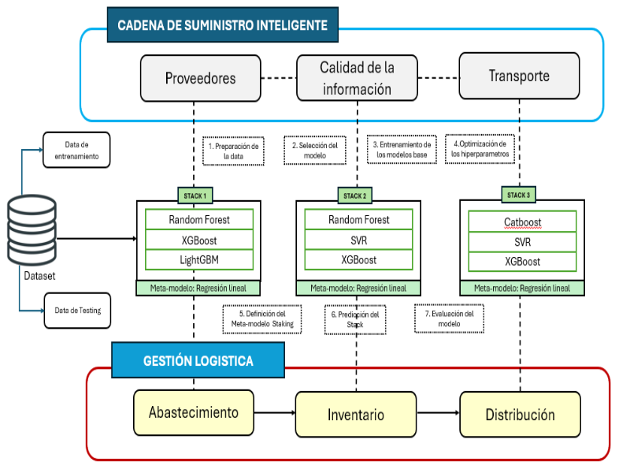

En SEHS Norte, implementamos un modelo de cadena de suministro inteligente basado en tecnologías avanzadas de Machine Learning para optimizar la logística de abastecimiento, inventario y distribución. Nuestro enfoque utiliza la metodología Ensemble Stacking, garantizando análisis de datos detallados y decisiones basadas en predicciones precisas.
